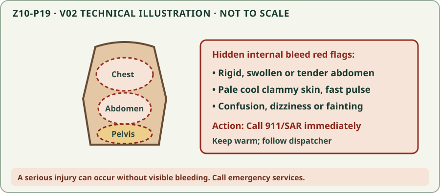

Z10-P19 · Wilderness medicine · New manuscript
Spot suspected internal bleeding and prioritize urgent EMS evacuation
Recognize hidden internal hemorrhage after blunt trauma or illness where no external wound is visible.
When it applies · High-force falls, bicycle/ATV/snowmobile crashes, struck-by-log blows, or sudden severe abdominal pain/collapse.
Equipment · Ground insulation, blankets, written monitoring log, and emergency communications.

Actions
- Suspect internal bleeding after hard torso/pelvis/thigh impacts or when a person shows rigid tender abdomen, expanding bruising, coughing or vomiting blood, dark tarry/bloody stool, or worsening dizziness/pallor.[M19, M05]
- Activate 911 immediately—internal hemorrhage cannot be stopped by field dressings and requires rapid hospital surgical stabilization.[M19, M05, T02]
- Keep the person warm and monitor alertness and breathing. Avoid unnecessary movement, especially after possible spine or pelvis trauma, and follow dispatcher instructions.[M05, M20, M22]
Failure recognition · Dismissing a hard handlebar blow to the belly as "just getting the wind knocked out" and letting the person hike on as shock develops silently.[M19, M05]
Verify · Confirm mechanism of injury, abdominal/bruising signs, vital trends, and urgent evacuation request are documented clearly.[M19, M20]
Stop or change course · Any signs of progressive shock (pale clammy skin, fast weak pulse, confusion) mandate highest-priority emergency extraction.[M05, T02]
Evidence and editorial notes
- M05 · NIH / MedlinePlus · Shock (current web edition)
- Section: Recognizing Circulatory Shock and Positioning · Conditions: Injured or ill patient with pale cool clammy skin, rapid weak pulse, confusion, or dizziness
Support: Treat suspected shock as a life-threatening emergency: call 911, control external bleeding, keep the person warm and insulated from cold ground, and do not give food or drink.
Limitations: Field responders cannot diagnose internal hemorrhage or administer IV fluids. · Conflicting evidence: None; reinforces keeping suspected shock patients NPO and warm.
Editorial note: Core shock recognition and stabilization boundary in Z10. · Specialist reviewer: Emergency and wilderness medicine
Primary source · checked 2026-11-24 - M19 · NIH / MedlinePlus · Bleeding (current web edition)
- Section: Internal Bleeding, Nosebleed, and Dressing Monitoring · Conditions: External vs suspected internal hemorrhage and severe epistaxis
Support: For routine nosebleed, sit upright leaning slightly forward and pinch the soft part of the nose continuously; escalate urgently for uncontrolled bleeding, coughing/vomiting blood, abdominal rigidity, or dizziness.
Limitations: Tilting the head backward causes blood swallowing and airway irritation. · Conflicting evidence: None; distinguishes minor nosebleed from internal-bleeding emergencies.
Editorial note: Supports bleeding sub-scenarios and recheck cadence. · Specialist reviewer: Emergency medicine and EMS
Primary source · checked 2026-11-24 - M20 · NIH / MedlinePlus · First Aid Overview (current web edition)
- Section: Lay First-Aid Scope, Kit Readiness, and Documentation · Conditions: Pre-trip kit preparation and remote patient monitoring
Support: Maintain an inspected, unexpired first-aid kit matched to your actual training, keep written patient observations (time, responsiveness, breathing, symptoms, interventions) for EMS handoff, and practice skills in certified courses.
Limitations: Carrying advanced medical instruments without clinical training adds risk rather than capability. · Conflicting evidence: None; aligns with ARC and NPS-K.
Editorial note: Anchors kit sizing, SOAP-style lay observation logs, and scope-of-practice cards. · Specialist reviewer: Wilderness EMS and clinical education
Primary source · checked 2026-11-24 - M22 · AHA and American Red Cross · 2024 Guidelines for First Aid (2024)
- Section: Positioning of the Ill or Injured Person · Conditions: Decreased alertness with normal breathing; no suspected neck/back/hip/pelvis injury
Support: Side-lying recovery position can be reasonable; reassess breathing continuously and act if it becomes abnormal.
Limitations: Avoid unnecessary movement after suspected spinal or pelvic injury. A recovery position may delay recognition of apnea if unmonitored. · Conflicting evidence: See A02 claim audit for boundaries.
Editorial note: Anchors airway-protection positioning and handoff documentation. · Specialist reviewer: EMS and emergency medicine
Primary source · checked 2026-11-25 - T02 · American Red Cross · First Aid Steps (current web edition)
- Section: First Aid Steps > Call 9-1-1 · Conditions: Lay emergency response to unresponsiveness, abnormal breathing or severe bleeding
Support: Activate EMS and get needed equipment. Follow dispatcher directions and act within training.
Limitations: Remote locations may delay EMS arrival, requiring sustained stabilization after activation. · Conflicting evidence: None; aligns with NPS-E.
Editorial note: Mandates early emergency activation and dispatcher adherence. · Specialist reviewer: EMS and wilderness medicine
Primary source · checked 2026-11-24
Source lineage · NIH MedlinePlus Bleeding and Shock; new manuscript · Classification · New manuscript.